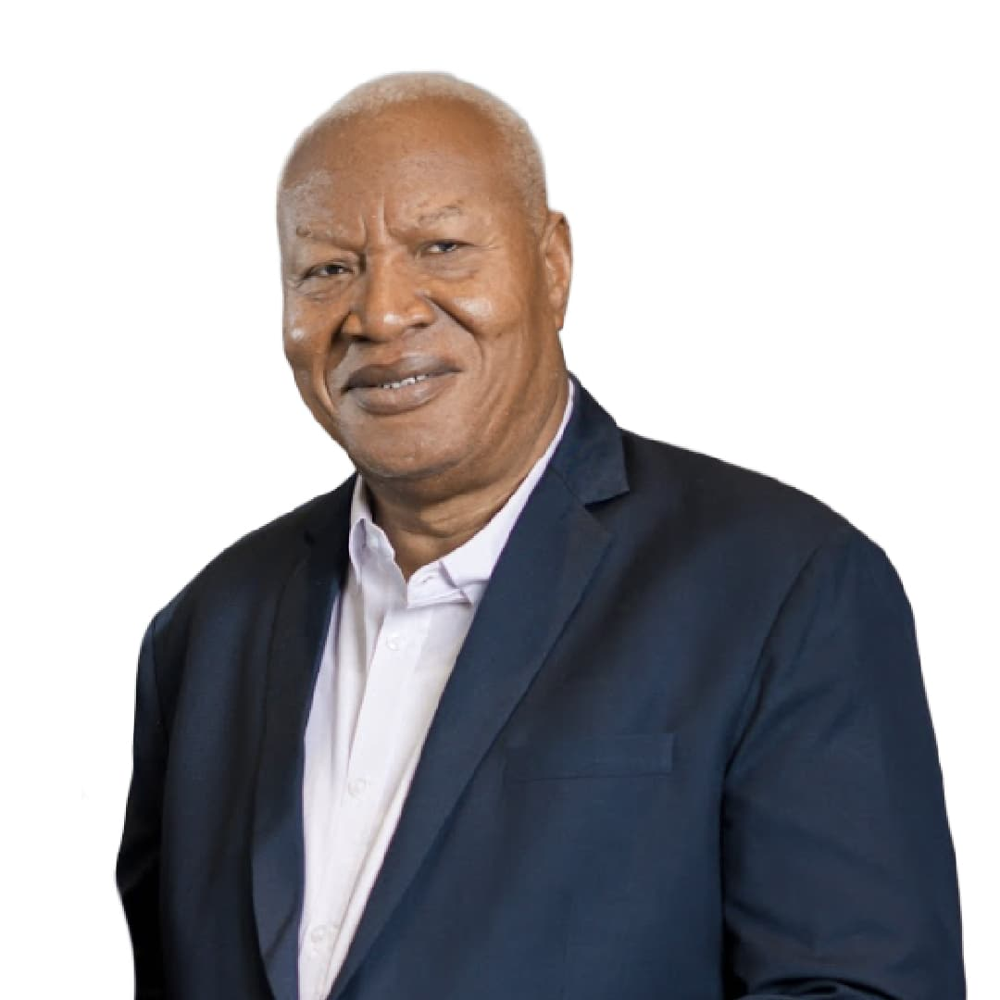
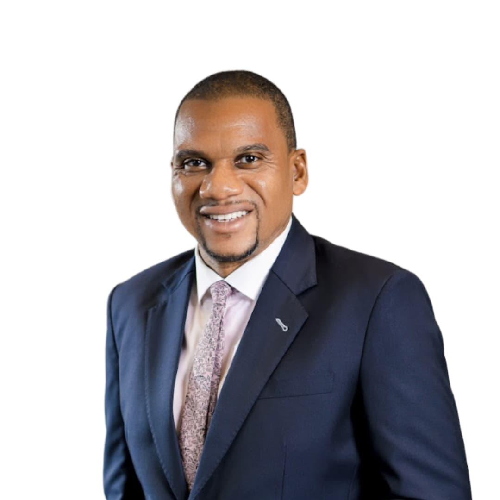
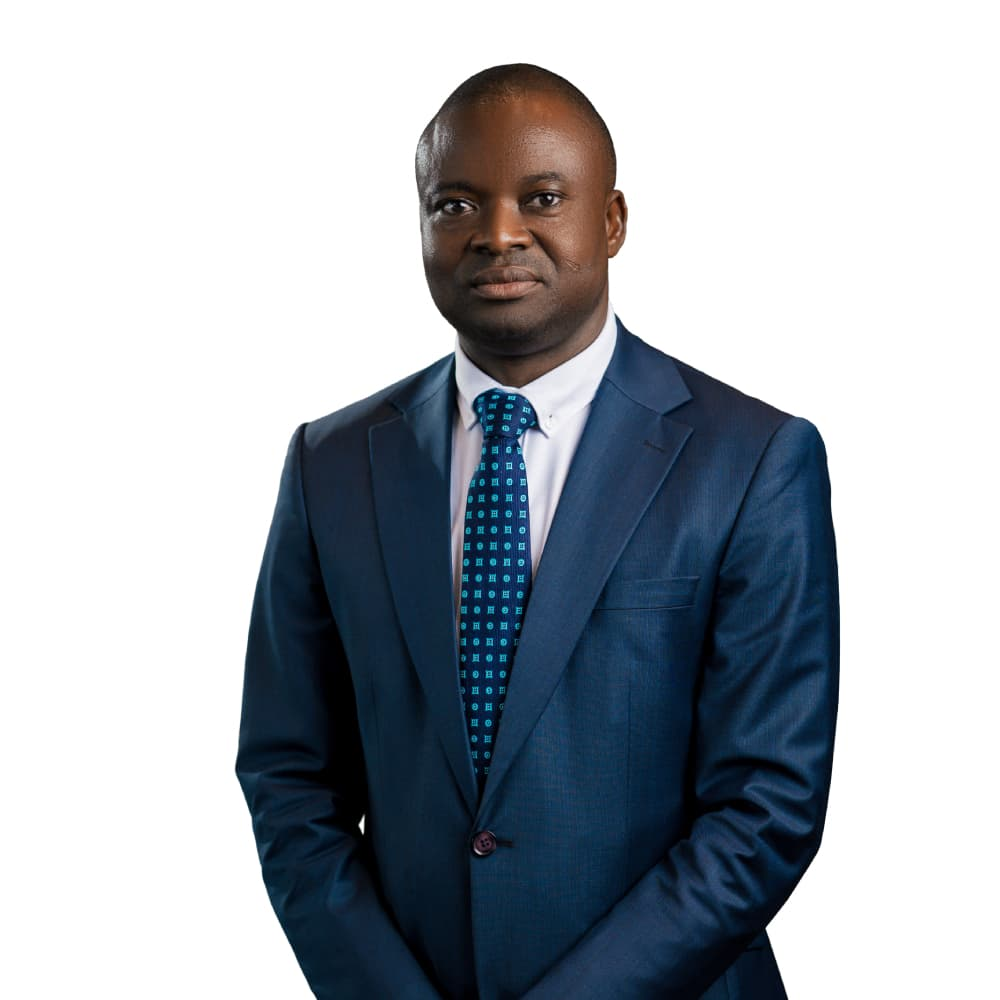
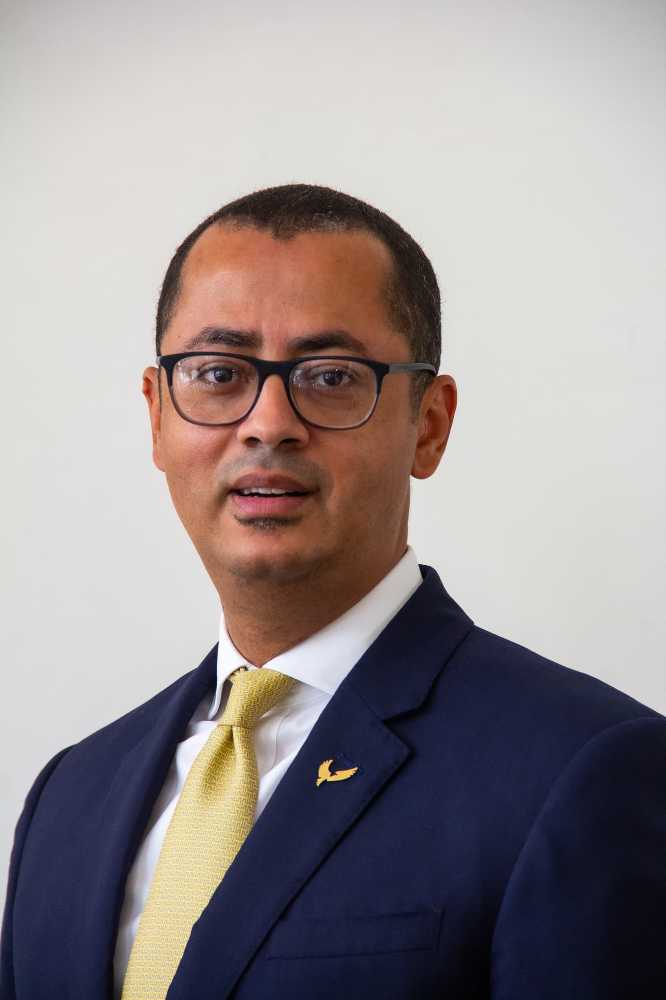
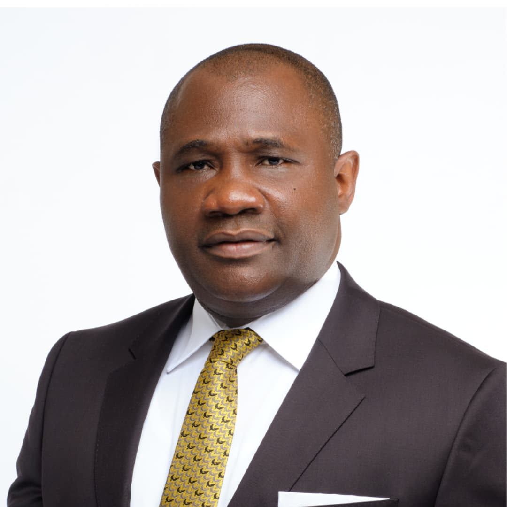
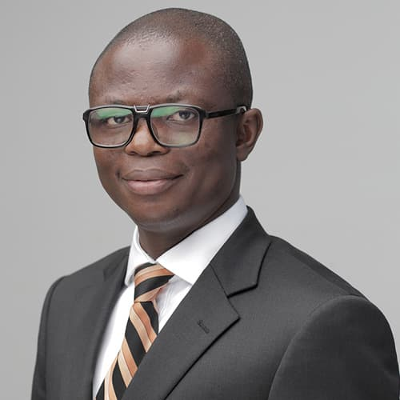
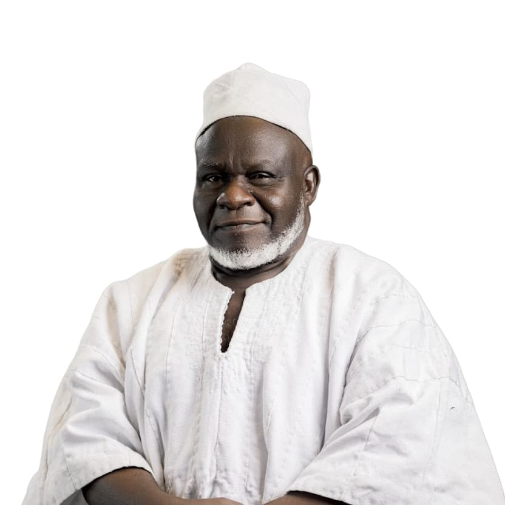
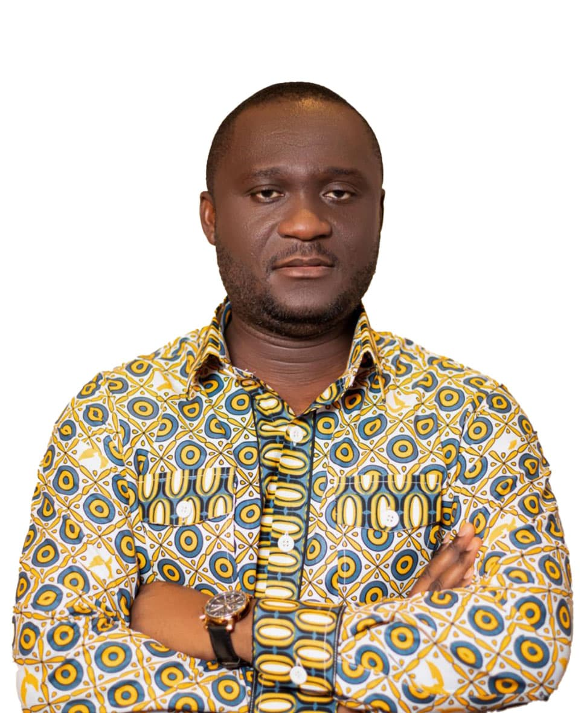
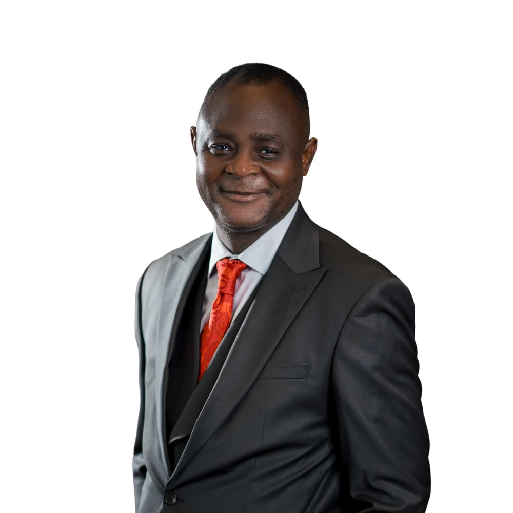

|

Professor Joshua AlabiBoard ChairProfessor Joshua Alabi is a distinguished academic, seasoned administrator, and renowned business strategist with a career spanning over three decades in academia, public service, and corporate leadership. He has held numerous high-profile roles, including Chairman of HFC Bank, where he successfully led its transformation into Republic Bank. His leadership extends across various sectors. He has served as the Chairman of the Board of Trustees for the Social Security and National Insurance Trust (SSNIT), Chairman of the Accra Polytechnic Governing Council (now Accra Technical University), and Chairman of the Ghana Book Development Council. As Vice-Chancellor of the University of Professional Studies, Accra (UPSA), Professor Alabi played a transformative role in establishing the university as a leading institution of excellence. In addition to his contributions to education and governance, Professor Alabi has an extensive background in public service. He was a Member of Parliament for the Krowor Constituency and served as Minister of State for both the Greater Accra and Northern Regions. His contributions to sports administration include roles as the General Secretary of GHALCA, a member of the GFA Management Board, and Coordinator for the senior national football team, the Black Stars. Through these various roles, Professor Alabi has consistently demonstrated exceptional leadership, driving policy development, institutional reforms, and organizational growth. As Chairman of the Board, Professor Alabi will provide strategic oversight and guidance to GCB, furthering the Bank’s mission to deliver innovative financial solutions, enhance shareholder value, and contribute to Ghana’s economic development. |

Mr. Farihan AlhassanManaging DirectorFarihan Alhassan, 44, is a highly accomplished financial specialist with two decades of experience in the banking industry. His immediate past engagement was as the Executive responsible for the Business & Commercial Clients Unit at Stanbic Bank Ghana, where he provided strategic leadership in driving the Bank’s commercial banking agenda and optimizing business performance across the country. Beginning his career at a remarkably young age, Mr. Alhassan made headlines at just 26 when he became the youngest regional manager at Barclays Bank (now Absa). His ascent through the ranks continued as he took on the role of Head of Retail and Distribution, where his people-centered leadership and commitment to performance management left a lasting impact on the organization.
Throughout his tenure at Stanbic, Mr. Alhassan earned acclaim for his visionary leadership, strategic focus, and customer-first approach, positioning him as a key figure in the competitive banking landscape. His appointment at GCB Bank is seen as a strategic move to bolster the Bank’s leadership and reinforce its status as a dominant force in the Ghanaian banking sector. Farihan is a results-driven professional with extensive expertise in retail and business banking. He has a proven track record of building resilient businesses, transforming underperforming units, and turning around operations to achieve sustainable growth. His core skills include business development, operational management, credit and risk oversight, and dynamic leadership. Additionally, Farihan is a strong advocate for team development and empowerment, leveraging his skills in training, coaching, and team building to foster collaboration and drive performance. With exceptional interpersonal, communication, and problem-solving abilities, he consistently delivers value in highly competitive and fast-paced environments. Widely respected for his strategic vision and leadership, Farihan Alhassan looks forward to his new role, keen to continue to play a pivotal role in shaping the banking sector and empowering businesses across Ghana. |
|

Mr. Alexander Agambilla AwineIndependent Non Executive DirectorAlexander Agambilla Awine is a Chartered Accountant, a Chartered Public Financial Accountant, a Chartered Energy Economist, and a chartered Petroleum Economist. He is a member of The Institute of Chartered Accountants Ghana (ICAG), the Chartered Institute of Public Finance and Accountancy (CIPFA) UK, the Association of Certified Chartered Economists (ACCE Global), and a fellow of the Global Academy of Finance Management. He holds a Master of Business Administration (Finance) from Coventry University and Post Chartered Diplomas in petroleum Accountancy, Forensic Auditing, Public Financial Management, and Cyber Security, all from the Institute of Chartered Accountants Ghana. Alexander Agambilla Awine currently holds the position of Accountant— Financial Reporting with additional responsibility as Finance Controller, payroll audit and Budgeting—at the ECOWAS Court of Justice. Before this role, he was the acting Director of Finance at the State Interests and Governance Authority (SIGA), from January 2023 to February 2024, having served as the Deputy Director of Finance—Budget, Financial Reporting and Treasury—from January 2021 to January 2023. He also served as the Deputy Director of Finance at SADA/NDA from November 2015 to January 2021. From September 2007 to November 2015, he was the Principal Accounting Assistant/Faculty Accountant at the University for Development Studies (UDS) and the Finance and Administration Manager at Sekaf Ghana Ltd from March 2006 to September 2007. He is a Public Financial Management Professional with 19 years of experience, with nine of those years in senior management positions. He played leadings role in restructuring and designing the internal controls of the Finance Directorates of the then Savannah Accelerated Development Authority (SADA), now the Northern Development Authority (NDA), and at the State Interests and Governance Authority (SIGA). Alexander designed the internal control systems of SADA, which led to its upgrading from high risk to low risk by UNDP. He provided leadership and oversight of finance and operational functions, including the development of a Medium-Term Development Plan, the development of Procedures and Accounting Policy Manuals, Annual Work Plan, budgeting and Budgetary controls, grants management, audits, internal control design and implementation, and preparation of Financial Reports in compliance with IPSAS and IFRS over the years. He played a lead role in the preparation and audit of the financial statements of the Divestiture Implementation Committee and SIGA, which were in arrears for ten years. He has vast knowledge of the operations of State-Owned Enterprises across sectors in Ghana. He led the SIGA team on several occasions to supervise the financial and operational performances of energy and financial sector entities. He played pivotal role in overseeing the reviews of Strategic Plans, Annual Workplans, budgets and financial analysis of Specified entities. He also supervised the appraisal of entities for the submission of Letters of No Objection to the Ministry of Finance on requests for government support or loan facilities by the Specified Entities. He was a key member of the technical team that conducted Annual Performance Contract Negotiation with Specified Entities, and his broad knowledge across sectors was always useful during the negotiation exercise. |

Mr. Samuel Kwame Yedu AidooExecutive Director, Wholesale & Investment BankingGCB Bank PLC has appointed Mr Samuel Kwame Yedu Aidoo joins as Executive Director, Wholesale and Investment Banking. Mr. Aidoo has a wealth of experience in structuring, origination, trading and execution in the UK and several African markets including but not limited to Nigeria, Ghana, Kenya, Tanzania, Uganda, Egypt, Ethiopia, and Botswana. Prior to joining GCB Bank, Sam worked at Fidelity Bank Ghana Ltd as the Deputy Managing Director (Wholesale Banking) with responsibility for the bank’s Corporate Banking, Financial Markets and Treasury, Capital Markets businesses as well as Fidelity Bank’s subsidiaries – Fidelity Asia Bank and Fidelity Securities Limited.
He also served on the Board of Fidelity Securities Limited. In his time at Fidelity bank, Sam was instrumental in the implementation of certain landmark transactions which include the ESLA Bond programme and the Securitization of GOG Contractor arrears, just to mention a few. Mr Aidoo also worked for Barclays Africa as Director, Regional Head, Global Markets distribution looking after the North Africa and East African regions out of Nairobi-Kenya and subsequently looking after the West African business out of Lagos-Nigeria. In his time with Barclays, he worked in senior roles in the financial markets business in Ghana and subsequently for three years out of London, where he managed and coordinated Barclays Capital’s structured product offering (Structured Assets, Index Products, ALM, Access Trades etc) into and out of Sub-Saharan African markets. He started his banking career with Standard Chartered Bank. |
|

Mr. Emmanuel Odartey LampteyDMD OperationsMr Emmanuel Odartey Lamptey joined GCB Bank Ltd in December 2020. He has 20 years multinational experience working for listed companies in corporate and retail banking, asset management, securities, brokerage services, pensions, insurance and micro-finance with operations in over 30 African countries. Mr. Lamptey started his career with KPMG and has since held other positions including Chief Financial Officer – WAMZ at Ecobank Ghana; Group Head, Finance at Ecobank Transnational Incorporated (Togo), Group Chief Operating Officer, Letshego Holdings Limited (Botswana) and Executive Business Manager to the Group CEO - Alexander Forbes Group Holdings (South Africa). Mr. Lamptey started his career with KPMG and has since held other positions including Chief Financial Officer – WAMZ at Ecobank Ghana; Group Head, Finance at Ecobank Transnational Incorporated (Togo), Group Chief Operating Officer, Letshego Holdings Limited (Botswana) and Executive Business Manager to the Group CEO - Alexander Forbes Group Holdings (South Africa). Emmanuel also held several roles with Standard Bank of South Africa Group in South Africa and Ghana. He also holds a Bachelor of Commerce degree from University of Cape Coast, Ghana and is a fellow of the Association of Chartered Certified Accountants, United Kingdom. |

Mr. Socrates AframDMD, FinanceSocrates is a finance professional with over 15 years’ experience in the Financial Services sector. He has a breadth of experience across strategy; business performance and reporting (financial, regulatory and statutory); debt and capital raising; business combination; investment and risk management. Prior to joining GCB Bank in February 2016, he was the Finance Director of Fidelity Bank Ghana Limited. Other positions he held at Fidelity include Head of Research and Head of Business Performance & Financial Control. He worked with UBA (Ghana) as Senior Analyst deputizing for the Financial Controller. He also worked with Export Finance Company Limited as Head of Finance & Administration and General Leasing & Finance Company Limited as Analyst for lease credit applications.
Socrates is a fellow of the Association of Chartered Certified Accountants (ACCA), having qualified by June 2003. He holds a Master of Business Administration (Finance) degree from the University of Ghana Business School and a Bachelor of Commerce degree from the University of Cape Coast. He is an alumnus of the Wharton Executive Education, University of Pennsylvania, USA. |
Mrs. Pamela Seyram AddoNon-Executive DirectorPamela Seyram Addo is an Associate Partner at Axum, a pan-African and Middle Eastern impact consulting firm, where she leads the firm’s West Africa presence. She advises multinational corporations, governments, philanthropic organizations, and development partners on economic and private sector development. She has deep expertise in strategy, private sector development, impact investing, gender-lens investing, and organizational effectiveness. She has led high-impact initiatives that drive sustainable and inclusive economic growth across Africa and Europe, with experience spanning Ghana, Côte d’Ivoire, South Africa, Nigeria, Mali, DRC, Rwanda, Kenya, Burkina Faso, and France. Previously, Pamela held senior roles at PricewaterhouseCoopers (PwC) in Ghana, the Organisation for Economic Cooperation and Development (OECD) in France, TotalEnergies in France, the European Union (EU) Delegation to Ghana, and Dalberg Advisors in Côte d’Ivoire. She holds a Master’s degree in International Development from Sciences Po, Paris, and a Bachelor’s degree in Economics and French from the University of Ghana. She is also a proud alumna of Wesley Girls' High School. Pamela is bilingual (English and French) and is PRINCE2-certified in Project Management. |

Dr. Alhaji Yahaya Abdul-RahmanNon-Executive DirectorDr. Alhaji Yahaya Abdul-Rahman is a member of ICAG, holds a B.Sc. Admin, a Diploma in Social Development, an M. Phil in Social Work, and a PhD in Public Administration, and researched in service quality in the public sector. Dr. Abdul-Rahman throughout his expansive career has experiences and competencies in accountancy, auditing and internal controls, human resource management, monitoring and evaluation, lecturing and training, measurement of service quality and customer satisfaction, banking operations, operations in downstream petroleum operations and consultancy. Having completed his ICA Ghana examinations in January 1995, he has been a practicing accountant, since 1998. He handled many accountancy and auditing duties with the peak being the Chief Internal Auditor in GCB Bank and the General Manager of the Accounts Division in GCB Bank between February 1998 and June 2001. He has provided auditing and accounting services for many companies and numerous SMEs in Ghana. Key clients included the Electoral Commission’s EU Fund, the National Banking College, UT Financial Services, VRA Resettlement Trust Fund and Zion University of Liberia.
He has developed manuals in accounting, auditing and internal controls for many organizations. In the field of human resource management, he headed the human resources department of the erstwhile ELF Oil Ghana in the mid-1990s, chaired the Staff Rationalization Committee in GCB Bank (1999-2001), and provided HR management services to many Oil Marketing Companies (OMCs). In 2011, he led a team that handled the merger of the IRS, CEPS and VAT into the GRA, and developed a consolidated automated staff database for the take-off of the GRA. He has developed HR manuals for many businesses. Dr. Alhaji Yahaya Abdul-Rahman has a very rich experience in lecturing and training. He was an external lecturer at the National Banking College for more than a decade; he was a lecturer in finance and financial reporting at the UPSA Graduate School from 2009 to 2011. In 2002, he trained all GCB Branch Managers and Area Office senior personnel on financial analysis and interpretation. He has conducted numerous training programs for the Rural Enterprises Project in many districts in Ghana. He has rich competencies in monitoring and conducting impact assessment and evaluation due to many consultancy assignments he handled for many international NGOs such as Plan International, Catholic Relief Services, Action Aid and Christian Aid, UK. With respect to the measurement of service quality and customer satisfaction, Dr. Alhaji Yahaya, in 2010, led a team that was tasked by the Public Sector Reform Secretariat to measure the service quality in over 20 public institutions, including the DVLA, IRS, VAT, CEPS, Ministry of Food & Agriculture, Ghana Immigration Service, Lands Commission, Ghana Tourist Board, Ghana Standards Board, Food Development Authority, Tema Oil Refinery, National Petroleum Authority, BOST, and many others. He also conducted the measurement of service quality and customer satisfaction for the Ghana Ports & Harbors Authority at Tema and Aviance Ghana at the Kotoka International Airport. Dr. Alhaji Yahaya has always been an innovator and a result-oriented person. In the late 1980’s he managed two ailing rural banks and turned them from lossmaking entities to profitable banks. He established the Internal Audit Department in GCB Bank in 1998 as a new department. When he became the General Manager of the Accounts Division in the bank in July 1999, he among others, changed the financial reporting system from quarterly to monthly basis; he introduced the decentralization of approved staff loan disbursement; he introduced automated cheque preparation in GCB head office in 2000; he digitally linked the head office stores and the head office accounts; and he made branches (dealing in foreign transactions) to account for their foreign exchange losses/gains in their monthly profit and loss statements. |
|

MR. FREDERICK AMISSAHNon-Executive DirectorFrederick Amissah is a professional with a strong background in economics, development, and banking and finance. His career spans many years in economic and policy analysis, sovereign debt, deal origination, corporate and investment banking, investment appraisal, structured finance and risk management. Currently, he serves as the Technical Advisor at the Ministry of Finance overseeing the Financial Sector Division as well as the External Resource Mobilization and Economic Relations Division Prior to this, he served as an economist for the UK government working for the Foreign, Commonwealth and Development Office (FCDO). During his time in the UK civil service, he served as the lead economist for the Finance Sector Deepening and the Ghana Revenue Programmes. He also led preparatory works for the establishment of Ghana’s first SME Listed Fund in collaboration with FSD Africa. He led the Project Completion Review (PCR) of the UK government’s £633 million donation to the African Development Fund’s 15th Replenishment (ADF-15) and provided recommendations for the 16th Replenishment (ADF-16). He also played a pivotal role in Ghana’s bilateral debt restructuring negotiations with the Official Creditor Committee (OCC). As the Public Financial Management (PFM) lead for the UK government in Ghana, he co-led development partners’ efforts in improving Ghana’s public financial management environment. He also served as a member of the Risk Working Group of the UK government in Ghana. He was the Head of Financial Advisory Services for Republic Investment (Ghana) Limited (RIGL). As an Executive Committee (EXCO) member and a member of the Asset and Liability Committee (ALCO), he led the development of financial products which served the credit needs of local businesses. He also worked with the corporate and commercial banking departments of Cal Bank PLC and Zenith Bank (Ghana) Limited respectively, where he played a major role in the turnaround of many non-performing loans. He’s also had stints as the International Trade and Finance Team Lead of the Institute of International Affairs as well as consulting as a Policy/Economic Analyst for the Parliament of Ghana. He holds both undergraduate (first class) and graduate degrees in economics and has passed Level 1 of the Chartered Financial Analyst (CFA) program. |
Dr. NANA AMMA ADLOVUIndependent Non-Executive DirectorDr. Nana Amma Adjovu is a lecturer, legal practitioner, and conflict resolution consultant who brings a wealth of knowledge and experience from her background in leadership and administration. She has an impressive track record across various sectors, including administration, banking, oil and gas, and academia. Nana Amma excels in negotiating settlements, mediation, and arbitration, having successfully navigated numerous financial, corporate, and international transactions to provide effective solutions for her clients. Her notable achievements include driving transformational initiatives that significantly improved service delivery metrics for a leading bank in Ghana, showcasing her ability to navigate complex regulatory frameworks and engage with stakeholders.
Dr. Adjovu holds a Bachelor of Science in Administration (Human Resources Management) from Central University, a Post-Graduate Diploma, and a Master of Business Administration (MBA) specialising in Corporate Finance from Wuhan University of Technology, China. She has also completed an LLB at the Ghana Institute of Management and Public Administration (GIMPA), an LLM in Conflict Resolution from the University of Law, UK, and a PhD in Mediation and Conflict Resolution from Euclid University, Gambia. Dr. Adjovu is dedicated to ongoing professional development, having earned certifications in Strategic Marketing Management from Harvard Business School Executive Education and in International Negotiation from the Saïd Business School at the University of Oxford. |
MR. ABDULAI ALHASSANIndependent Non-Executive DirectorDr. Abdulai Alhassan holds a PhD in Business Administration from CASS European Institute of Management Studies-France.He holds Executive Masters in Business Administration (Finance) from the University of Ghana. He graduated from the University of Cape Coast with a Bachelor of Commerce Degree and a Diploma in Education. He is a fellow of the Institute of Chartered Accountants (Ghana) and a member of Chartered Institute of Taxation (Ghana). On his work experience, Dr. Alhassan began his work career at the NonPerforming Assets Recovery Trust (NPART),where he rose to the position of Internal Auditor. He moved to International Commercial Bank (ICB), now FBN Bank, where he worked for 15 years. At ICB, he rose through the ranks to the position of Deputy General Manager and was the de facto Deputy Chief Executive Officer of the bank and was responsible for Financial Control, Treasury, Human Resources, Legal, Compliance and Training Departments. He left the bank to join COTVET as the Financial Management Specialist in Charge of World Bank Projects. Dr. Alhassan later was employed by Ghana Civil Aviation Authority (GCAA) as the Director of Internal Audit and shortly appointed the Ag.Director-General, where he acted for almost 2 years and subsequently confirmed as the Deputy Director-General Finance and Administration, a position he held till his statutory retirement.On Boards and Committees, Dr. Alhassan served as the President of African Civil Aviation Commission (AFCAC). He served two-terms of 4 years on the Council of the Institute of Chartered Accountants (Ghana). He served on the Boards of International Commercial Bank and Electricity Company of Ghana (ECG) and was the Chairman of the Finance Sub-Committee of the Board of ECG. Dr. Alhassan Chaired the Audit Committees of Pharmacy Council and Nuclear Regulatory Authority. He is currently the Audit Committee Chairman of the Ministry of Labour, Jobs and Employment and Audit Committee Member of the Ghana Revenue Authority (GRA). He also serves on the Board of Platinum Debt Income Fund (PDIF). Dr. Alhassan is a lecturer at the Institute of Chartered Accountants (24 years) and at Ghana School of Law (12 years), where he lectures Financial Management and Legal Accountancy respectively. |

Dr. NENE ASAFOTEIIndependent Non-Executive DirectorDr. Nene Adams Asafotei is a Financial Economist and a Public Policy Advocate, with expertise in financial management and modeling, economic intelligence, monetary policy, strategic management, commercial and investment banking, derivative instruments and markets, taxation and fraud examination, forensic auditing, corporate and venture capital funding, and financial markets operations. He is a Senior Adjunct Lecturer with the School of Graduate Studies, University of Professional Studies, Accra [UPSA]. He lectures in Compliance and Regulations of Pension Schemes. He has keen interest in financial markets operations, regulatory regimes by the Central Bank, and the impact of government policy on the lives of the citizenry. His research interest spans poverty alleviation and microfinancing for SMEs, pension funds administrations, investment banking and private wealth management, monetary and fiscal policy formulation in developing economies and the role of electronic money in financial intermediation. Leveraging on his expertise in development finance and economic diplomacy, Nene Adams built a vast network of venture capitalists who are ready to invest in projects in excess of USD1billion especially when such projects are viable with positive cashflow, with sovereign guarantee.
He holds MA Economic Policy Management [Monetary Economics] from the University of Ghana, Legon, MBA [Finance] from the University of Leicester, UK, and a Doctor of Philosophy [PhD] in Finance from SMC University, Switzerland hoping to fine-tune and strengthen his expertise in financial and monetary economics, and deepen his understanding of the dynamics of emerging markets operations and the emergence of new money [cryptocurrency]. Nene Adams has over twenty years of professional experience in banking, insurance and management-consulting, venture capital funds arrangement; ten of which has been at the managerial and executive levels. At his early years, he had a stint with Price Waterhouse Coopers, Investek Consultancy Ltd., Sync Consult and Richard-Morny & Associates. As a corporate banker, he worked with Zenith Bank Ghana as Unit Head, Regional Corporate and Conglomerate Banking and later as General Manager, Banking Operations with Union Savings & Loans [now OmniBank]. Prior to that, He was Operations Manager with Provident Life Ghana, now Old Mutual Life. Under the PhD Finance Programme, his dissertation was on “Understanding the nature of Banking Competition and Financial Stability in Ghana”. His second unpublished academic work: An Assessment of the Financial Performance of the SSNIT Pension Scheme in Ghana [1991-2009] was a key requirement towards the award of the MA EPM [Monetary Economics] by the University of Ghana. Nene Adams intends to pursue a post-doctoral studies in Financial Economics to delve further into the nature of the disruptions that the emergency of cryptocurrency brings into the financial systems architecture and the future of central banking and financial intermediation especially in developing economies. |
MR. JOHN COLLIN VILLARSNon-Executive DirectorMr. John Colin Villars has over 25 years corporate experience that cuts across investment banking, manufacturing and industrial operations, finance and more recently law. John started his career working as an Analyst in Corporate Finance with Strategic African Securities (SAS) Limited, Accra. This was during the days of Divestiture and Privatization, after the establishment of Ghana Stock Exchange. Under excellent training he was involved in various IPOs including that of Ghana Commercial Bank in 1996. John ended his formal career in corporate finance advisory when he saw an opportunity in seeing to the successful listing of his family security printing business – Camelot –on the Ghana Stock Exchange (GSE) in 1999, in the first ever fullyunderwritten IPO. On the other side of the negotiating table, he joined the Camelot Group and set up a Business Development team to expand the company’s terrain.
Having successfully expanded the company’s footprint across nine (9) African countries, he established Camelot Security Solutions Limited (CSSL) in Nigeria in 2003, where he served as the CEO until 2008. Over the period, CSSL provided a diverse array of document security products, software, verification and validation systems, to governments, top-tier institutions, banks and multinational companies. Mr. Villars is presently the Managing Director of Camelot Ghana PLC, and is managing the company’s diversification project into flexographic and label printing. With a wealth of Corporate Governance and Business Development experience, John has sat on various boards and currently sits on the boards of SEM Capital Limited, EVC Africa, and Quality Life Assurance Company Limited in Ghana Mr. Villars holds a Bachelor of Arts degree in Business Admin (Finance & Accounting) from The American University in London (Richmond), and a Post-Graduate Diploma in Industrial Financial Management from the Bergische Universitat Gesamhochschule (BUGH) in Wuppertal, Germany. John has recently pursued a new professional development path in law. He earned a Bachelor of Laws Degree from the University of London, and completed the Legal Practice Course (LPC) and a Master of Science in Law, Business & Management from the University of Law, Guildford, UK. Following his successful completion of the Post Call Law Course at the Ghana School of Law, John has recently been called to the Bar as a Barrister and Solicitor of the Supreme Court of Ghana. He is a member of the Ghana Bar Association. John is an avid reader, sportsman and entrepreneur. |